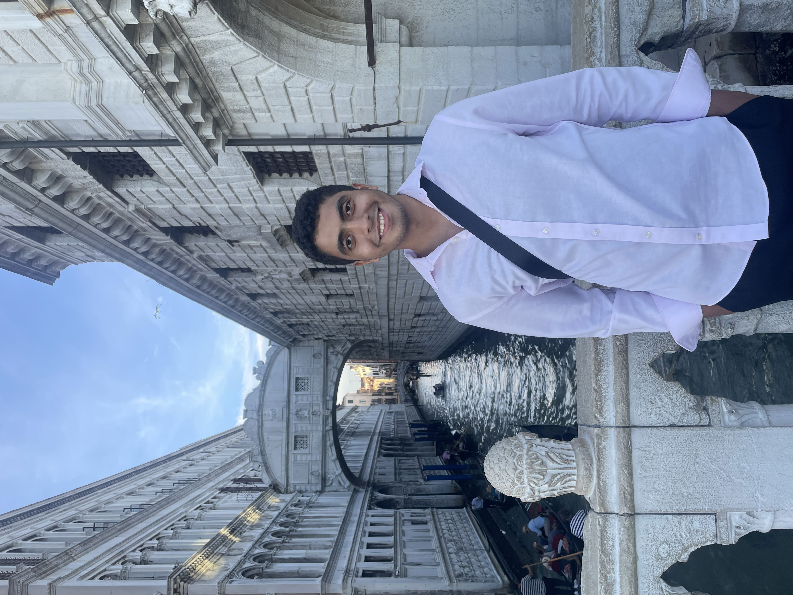

Ali Elaswad
Computer Engineering, The American University in Cairo
I'm a final-year Computer Engineering student at AUC, concentrating in AI. I work on machine learning for decisions made under uncertainty, mostly in healthcare. I care less about how accurate a model looks and more about whether the decision it drives actually gets better.
Right now I'm a research intern at the University of Waterloo with Raouf Boutaba and Noura Limam, working on reinforcement learning for 5G networks. At AUC, I work with Nourhan Sakr and Rodrigo Carrasco on decision-focused learning for operating room scheduling. Before that I was a research intern at Osaka University with Moustafa Youssef and Hamada Rizk, and an Applied Scientist intern at Microsoft AI.

AENews
| Sep 2026 | Presented our OR scheduling paper at ECML PKDD 2026 in Naples. |
| 2026 | Sign language translation paper accepted at WSLP @ EMNLP 2026. |
| 2026 | Our AraSeg system placed 1st in 6 of 8 tracks at ArabicNLP 2026. |
| Jul 2026 | Joined Microsoft AI (Shopping) as an Applied Scientist intern. |
| Feb 2026 | Started a research internship at the University of Waterloo. |
| Nov 2025 | GeoDrive won 1st place at the ACM SIGSPATIAL 2025 Student Research Competition. |
Publications
* equal contribution
Experience
Reinforcement learning agent that acts as the 5G Policy Control Function, adjusting QoS from live network telemetry.
Distilled a small aspect-based sentiment model from 700k LLM-labeled reviews, raising F1 from 53% to 75%.
Meta-learning for driving policies that adapt quickly to new cities.
Decision-focused learning for OR scheduling on real neurosurgery data, and fair EV charger planning.
Computer Architecture Lab, Digital Design Lab, and Discrete Mathematics.
Awards
- 1st Place, ACM SIGSPATIAL Student Research Competition 2025
- AUC Award for Excellence in Undergraduate Research 2026
- AUC Honors Assembly, top 1% of senior students 2026
- AUC Undergraduate Research Travel Grant, twice
- AUC Dean's List, 7 consecutive semesters 2023 – 2026